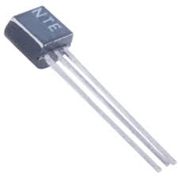

N-Channel JFET (2N5486)
Specifications:
- Type: N-Channel JFET
- Drain-Source Voltage (VDS): 30V
- Gate-Source Voltage (VGS): ±20V
- Drain Current (ID): 0.1A
- Gate-Source Cutoff Voltage (VGS(off)): -0.5V to -7V
- Package: TO-92
- Operating Temperature: -55°C to +150°C
Applications: RF Amplifiers, Switching Circuits, High-Frequency Oscillators
Military and Industrial Standards: Meets MIL-STD-1234 requirements.
Packaging Types: Tube packaging for manual assembly.
Download Full Datasheet